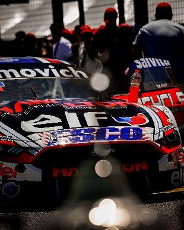

Santero y Werner tildados como favoritos
15-08-24
Julián es líder y Mariano lo sigue de cerca.Ver mas...


Julián es líder y Mariano lo sigue de cerca.Ver mas...

El de Arrecifes, se quedó con el mejor tiempo en la clasificación del TC.Ver mas...

Diego Ciantini, segundo en el campeonato a 34,5pts del líder Julián Santero, buscará descontar este fin de semana en San Nicolás, circuito donde nunca logró un podio.Ver mas...
46 pilotos estarán presentes en el Autódromo Juan María Traverso, este 19 y 20 de octubre.Ver mas...